Mine Site SME
Operating Manual
Self-paced induction · Boddington Bauxite Mine
How To Use This Induction
Work through every module
Use the arrow keys or tap the screen edges to move. Modules unlock in order — finish one and the menu opens the next.
Click to reveal detail
Cards marked + expand and flip cards turn over. Every card on a slide must be opened before the next slide unlocks.
Your progress is saved
Completed modules are ticked on the menu, and your reading is recorded against the assessment — close the window any time and pick up where you left off.
This deck is a training aid
The controlled document is the SME Operating Manual. If in doubt, refer to the manual or ask your supervisor.
Section Menu
Parts unlock in order — read every slide and open every card to unlock the next part
Working Safely in the
Active Mine Area
Safety focus areas · PPE · principal mining hazards · the 40-metre exclusion zone
Production Safety Focus Areas
Tick each focus area to acknowledge it.
Wear correct, correctly fitting PPE at all times
No mobile phones while walking, driving or working
Use correct radio protocol and acknowledge all calls
Communicate hazards to others in your work area
Always follow the 40 m exclusion zone — no clean-up within 40 m of an SME workspace
Prestart every SME and report faults to Pit Control
Isolate with your hasp and personal lock before entering a machine footprint
Operate machinery with doors and windows closed
Never leave open faces — ensure a 1.5 m safety windrow
Always park and chock correctly
Three points of contact when accessing or egressing SME
Seat belts correctly fitted and worn at all times
Never store loose items on the floor of SME
PPE in the Active Mine Area
Tick each item to confirm the minimum PPE for the active mining area.
High-visibility clothing
Worn at all times in the active area
Steel cap boots
Slip-on boots are not allowed
Safety glasses
AS/NZS 1337 rated, or prescription glasses with side shields
Hard hat or bump cap
Some restrictions apply on where bump caps can be worn
Gloves
Worn for every manual task performed
Hearing protection
May be required depending on the task
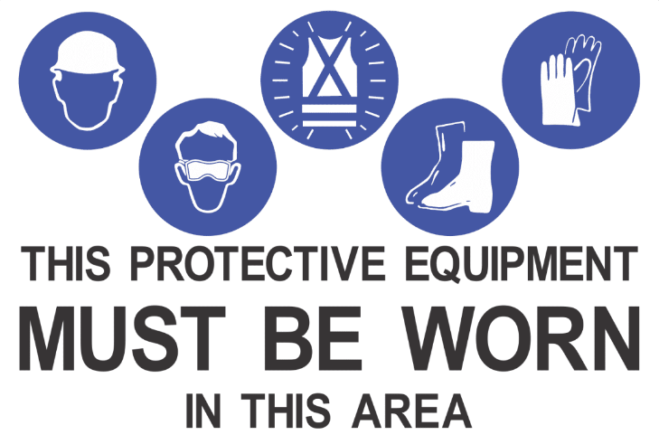
Note: blue signage on a white background denotes a mandatory requirement.
Principal Mining Hazards
South32 has identified 32 Principal Mining Hazards — activities or circumstances with reasonable potential to cause multiple deaths in a single incident or recurring incidents. Six apply to the BBM active mine area. Click each to see its critical controls.
{{ pmhGateText }}
Exclusion Zones
around all LVs, RGVs, SME and pedestrians — unless a specific SWI or JHA applies
IMPORTANT: authorisation must be gained from the Duty Supervisor if production will be impacted for an extended period.
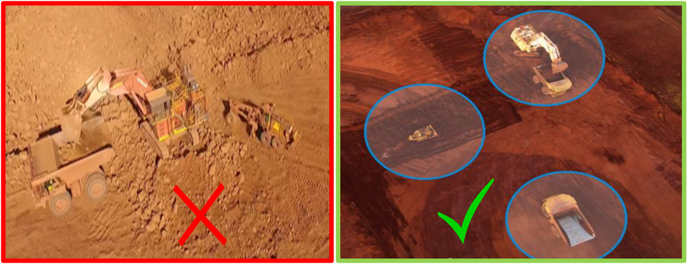
To enter a 40 m work area
Stop outside the 40 m exclusion zone
Request authorisation via positive two-way communication
All equipment stopped, all G.E.T grounded
On approval, proceed with caution
Advise the operator when you are clear so work can recommence
Communication
Two-way radio · emergency response · radio channels · blasting protocol · positive communication
Two-Way Radio Usage
CB and two-way radios are not classified as mobile phones
Only use two-way radio systems when it is safe to do so
Offensive or inflammatory language will not be tolerated
If radio traffic is taking your focus off the road, tell the recipient you will call back once safely parked
Saddleback
SADDLE #1
Use while driving on the Saddleback mine site, unless a job coordinator sign specifies otherwise
Marradong
MARRA #1
Use while driving on the Marradong mine site, unless a job coordinator sign specifies otherwise
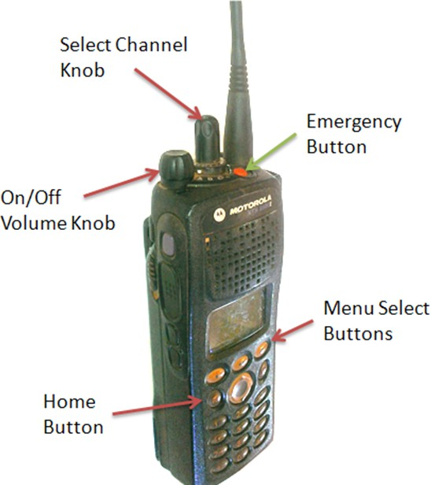
Emergency Response Procedure
Press the orange emergency button for 3–5 seconds — this gives you priority on the emergency channel
Repeat: “Emergency, Emergency, Emergency”
Identify yourself and state your location
Identify the emergency and the assistance required
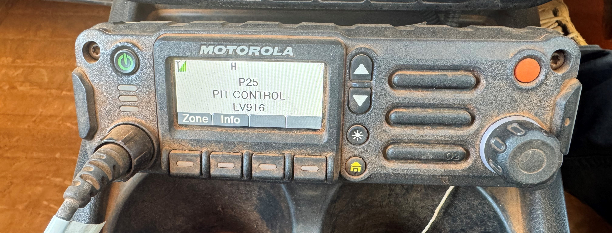
When you hear an emergency call
Cease all activities · park up safely · monitor Channel #1 for your site · await further instructions or move to the nearest muster point as directed.
Vehicle incident on site
An Emergency must be called. DO NOT move any vehicle until your supervisor or the ESO advises it is OK to do so.
Pressed the orange button by mistake?
Immediately notify the ESO and/or Pit Control. There are no repercussions — but failing to notify triggers an emergency shutdown of the whole site.
Radio Channel Reference Guide
{{ radioGateText }}
Blasting Protocol
A warning message is broadcast across all BBM channels ten minutes before every blast.
exclusion zone is set up around the blast area
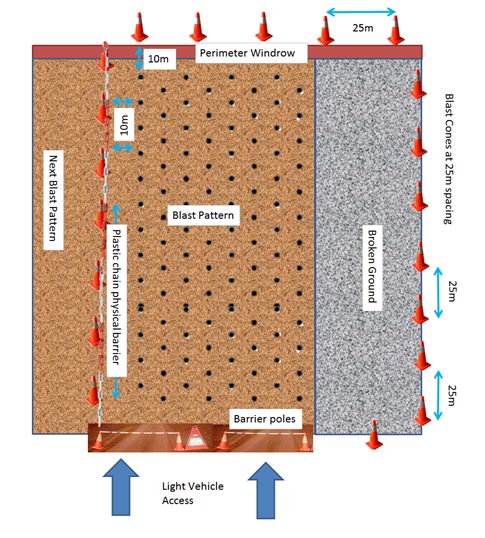
Blast guards move into position
Blocking all haul roads and LV tracks to keep traffic and personnel out of the blast clearance area
Maintain radio silence on the BLAST channel
Unless directly involved in the blasting procedure, until the ALL CLEAR is advised
Pit Controller announces the all clear
Over all channels, when the blast is cleared and roadblocks are off the haul roads
For more information see the Blast Management Plan (01013284).
Positive Communication
A critical control against vehicle interaction at BBM. Set the radio to the correct channel for your area, call using the vehicle's asset ID, and receive positive communication before entering any 40 m exclusion zone.
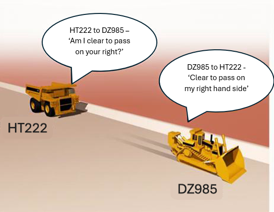
“HT222 to DZ985 — am I clear to pass on your right?”
“DZ985 to HT222 — clear to pass on the right-hand side.”
Positive communication has NOT been achieved unless there has been a positive response.
Access & Traffic Rules
Area access · pedestrians · collision avoidance · mobile phones · signage
Active Mining Area Access
If you are not on an approved routine crew list, obtain verbal clearance from Pit Control before entering the active mining area.
Notify Pit Control again when you leave the area. Personnel on an approved routine crew list are exempt.
Pit Control may ask for
Pedestrians on Haul Roads
Pedestrians are NOT permitted on haul roads without authorisation from the duty production supervisor.
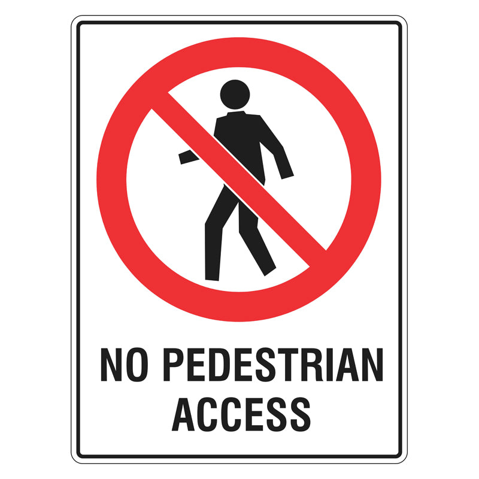
Seek authorisation from the duty production supervisor
Advise mine control of location and times pedestrians will be on the road
Mine control broadcasts to all mine site traffic
Once affected SME is controlled, authorisation is given for pedestrians
Advise mine control when all pedestrians are clear
Mine control broadcasts the all-clear and hauling recommences
Exceptions: blast crew collecting delineation cones on roads already closed for blasting; sign technicians working under risk assessment; loading unit operators working under the relevant SWI.
Collision Avoidance System
BBM runs both CAS 4 and CAS 10. The system gives the operator a 360-degree view of surrounding vehicles and equipment, plus collision-avoidance based on path prediction, via a non-intrusive cabin display.
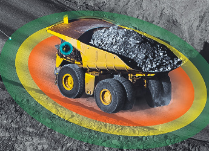
Protects all mining vehicles, assets and operators within 500 metres
Personal Mobile Phone Use
Phones, tablets, earphones and smart watches are prohibited in SME at all times.
Using a phone in control of any LV, RGV or SME may result in disciplinary action up to and including termination. In working areas, phone use is authorised only for WAPL business purposes — and you must remain stationary.
Urgent contact for your next of kin
Pit Control 9734 8400 · or your supervisor's mobile
Carrying a device? Yondr pouch steps
Switch the phone completely off
Place it inside the Yondr pouch
Push the button to lock the pouch
Store it in your crib bag — never on your person
Unlocking bases are at turnstiles, crib huts and the Go West bus — use them during breaks and at the end of the workday.
Signage
{{ signGateText }}
{{ sign.name }}
{{ sign.hint }} {{ sign.chev }}{{ sign.detail }}
Operating SME
Footprint & isolation · horn signals · authorisation · inspections · faults · blind spots
SME Footprint & Isolation
The footprint is the area directly beneath the machine. To enter it, you MUST isolate the equipment with your personal lock and hasp — isolator in the off position — then verify with a Try Test.
Whenever leaving the machine, isolate via the red battery isolator so batteries are not drained.
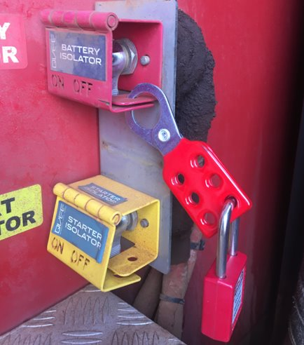
Exemptions — engine may stay running
Horn Signals
{{ hornGateText }}
Always wait 5–10 seconds after signalling your intention before carrying out the action.
Authorised Use of SME
No person may operate any SME at BBM unless they are:
Qualification expired? Do not operate — a refresher assessment must be completed.
Mounting & Dismounting
Three points of contact — two hands and one foot, or one hand and two feet — at all times.
Face ladders at all times; only stairways may be used facing forward
Clean grease or oil off access points first
Never jump on or off — especially a moving machine
Never use control levers as support getting in or out of the cab
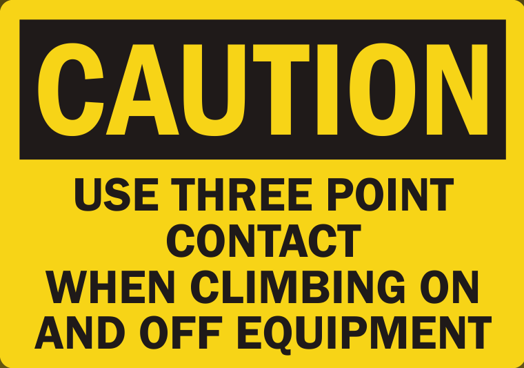
Walkaround & Pre-Start Inspections
360° walkaround
Before operating and after parking up. No lock and hasp needed — but you must not enter the footprint. Identifies faults or damage before the next operator arrives.
Full pre-start inspection
Also after planned or breakdown maintenance, and before relocating a machine for the first time in a shift. Check for damage, fluid levels, leaks on the ground, mechanical faults. Ensure no one is in the cab.
Pre-start checklist
Filled in during warm-up. Anything documented must be called through to Pit Control. Sign and hand in the top (white) copy at end of shift.
Caution: do not enter the footprint of any SME without a proved isolation.
Start Up, Mobility Test & Hot Seating
Horn before starting
Key on, check the monitoring system — all alert lights and buzzers operational. Sound the electric horn once, start per OEM procedure, warm up all systems to operating range.
Horn before moving
Test brakes, steering and hydraulics before the SME enters operational mode. Avoid the air horn except in emergencies — never in SME park-up areas.
Hot seat change out
The only time equipment may be left running unattended. Never enter the footprint while hot seating. Haul trucks cannot be hot seated in-pit — only in constructed SME park-up bays.
Categorising Faults
Must not be operated
Unless rectified by an authorised repairer, or approved by the Maintenance Supervisor — with a confirming email to Pit Control and the Mine Production Supervisor stating the conditions of use.
Still not comfortable operating it? DO NOT OPERATE IT.
May be operated if safe
The operator approves use by initialling the pre-start checklist. Report the fault to Pit Control so it can be scheduled for repair or a notification raised.
Operator Maintenance Duties
Operators may only do pre-start checks and windscreen water top-ups unsupervised. Any other maintenance task only under the supervision of a Service Person or Maintenance Technician, at their request.
Operators are NOT authorised to remove radiator or reservoir caps. If a sight glass or sensor shows a low level, call a Service Person or Maintenance Technician.
Blind Spots & Monitoring
SME size means vision is always compromised. Click each numbered point — everything a driver cannot see from the cab.
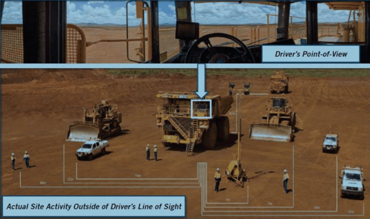
Equipment alongside
A dozer working to the side sits in the operator's blind zone. Keep clear and make positive contact before approaching.
Ground personnel
People on foot beside light vehicles are easily hidden by the machine. Assume the operator cannot see you.
Rear & low blind zone
Crew and equipment behind and below the machine sit in its largest blind spot. Never position yourself there without positive communication.
Equipment to the right
Machinery on the offside can be masked entirely. Stay clear of turning and reversing paths.
Vehicle Interaction
LVs & RGVs · change outs · parking · refuelling · passing · breakdowns · public roads · visibility
LVs & RGVs Entering the Active Mining Area
Before entering, make a general broadcast stating the pit and your vehicle: “LV260 entering SW20 work area.”
To pass equipment, gain authorisation via positive two-way communication. Equipment must be stationary with all GET grounded. The 40 m exclusion zone applies unless there is hard-barrier segregation.
In-Pit Operator Change Out
LV operator announces entry to the pit and intention to swap operators
Pos-coms with the SME operator; all GET grounded before entering 40 m
Pos-coms before passing any queued equipment
Park the LV in clear view of the SME operator or behind a physical barrier
Work recommences only once the LV is confirmed 40 m clear
Haul truck operators may only swap or exchange passengers in designated SME park-up bays.
Park Up of SME
Designated park-up areas provide
· Physical separation of LVs and pedestrians from SME
· Adequate lighting and defined parking bays
· A purpose-built drain or berm to park in, on or against
· Signage for speed, right of way and access
LV or RGV entering a park-up area for maintenance: gain supervisor authorisation, erect coordinator signage, and isolate any SME parked inside.
Parking outside designated areas
Parking Near SME
Shut down; park fundamentally stable or use wheel chocks
40 m rule applies — pos-coms required before entering
Park LVs and RGVs outside the 40 m zone or behind a physical barrier
RGVs and LVs always approach SME — never vice-versa.
Maintenance Access In-Pit
Where possible, relocate the equipment at least 40 m from any other operation
If occupied: pos-coms, GET grounded, and the SME operator out of the cab before entering 40 m
Never park an LV or RGV behind SME unless it is parked correctly and locked out
If the SME must move, move the maintenance vehicle outside the 40 m zone first
Equipment Running While Unattended
Unattended means the driver can no longer control the equipment — out of the cab, on the ground. Engines of all LVs, RGVs and SME must be shut off whenever unattended.
Ensure the engine has completely shut down before dismounting
Do not rely on a turbo timer to shut the engine down
Switch battery isolators off before leaving the immediate area
Exemptions (float prime mover, fuel truck, blast truck, tandem scrapers, T1255 Vermeer) are listed in the Isolation section of this manual.
Pit Control
Located at the Marradong administration facilities. Two Duty Pit Controllers per 12-hour shift — one for Development, one for Production — tracking SME and active-area entries via the Fleet Management System and two-way comms.
Family needs to reach you?
They can call Pit Control on 9734 8400 — a message will reach you via Pit Control or the Duty Supervisor.
Service Bays & In-Pit Refuelling
Pit Control directs haul trucks to designated service bays for refuelling and servicing
Other SME are refuelled in-pit — the lube truck always moves toward the machine, never vice-versa
Operators dismount to ground level unless directly involved — and isolate personally before entering the footprint
Any servicing delays — tell Pit Control so other SME are kept out
Passing Procedures
Overtaking = going around a moving vehicle. Passing = going around a stationary vehicle with attachments grounded. No one may overtake moving vehicles — the only exception is an emergency vehicle with lights and sirens active.
Passing stationary equipment
· Maintain the 40 m exclusion zone before any manoeuvre
· Gain approval via positive two-way communication
· Equipment stationary, all GET grounded (drill masts in travel cradle or grounded)
· Max 40 kph — or 20 kph past a float parked to load/unload
· 100 m clear vision required
Overtaking a working grader
· May be overtaken left or right depending on road position
· Maintain the 40 m exclusion zone first
· Some situations require pos-coms approval
· Reduce speed to 40 kph or less; 100 m clear vision
· Watch for hidden rocks — avoid travelling along the grader's windrow
At no stage may SME overtake a moving LV, or vice-versa.
Mechanical Failure on a Haul Road
Notify, in this order
All other road users
Mine control
Duty production supervisor
Park fundamentally stable, wheels facing into the windrow to prevent roll-aways
Remain inside to monitor the radio and give pos-coms to other road users, until Pit Control advises otherwise
Vehicles are never to be left unattended on a haul road
Access Over Public Roads
With a gate attendant
A qualified gate attendant controls lights and gates. Green = open to haul traffic. Red = closed. The 40 m zone applies on red and whenever the gate operator is on the ground.
Spotter operates the gates
SME parks 40 m clear; spotter (with permit + radio) places flashing lights on signage, closes gates to the public, clears the intersection, then pos-coms the SME through. Gates re-closed after; lighting plant required at night.
Driver operates the gates
Park at the gate, check the road is clear, unlock and swing both gates into the mine site, drive across when clear, park inside, then close and lock both gates behind you.
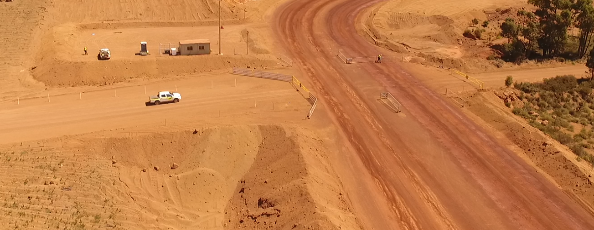
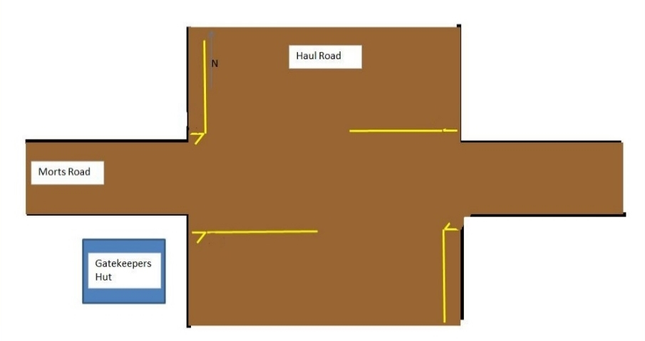
If a public vehicle enters the mine site during crossing activities, use the emergency procedure to stop all work and alert the ESO.
Reduced Visibility
Dust, fog or inclement weather — every operator is empowered to report road hazards and stop if conditions are unsafe.
Report to your supervisor and notify all other road users
Travel speeds drop in increments of 20 kph
Speed reductions are broadcast over the two-way
If visibility is still compromised, the operation must cease
Hazardous Events,
Ground & Health
Fires · lightning · powerlines · roads & gradients · faces · vibration · fatigue
Equipment Fire
Know the location of extinguishers (near the cab and at ground level) and suppression actuators (in-cab, some at ground level) before you operate.
PASS method
Pull the pin · Aim at the base · Squeeze the trigger · Sweep side to side
Only use an extinguisher if safe to do so. Suppression: pull the pin, depress the plunger. Then follow the Emergency Response Procedure.
Tyre Fire
· Park as safely as practicable, remote if possible, positioned so rescue can approach out of the line of fire
· Initiate the emergency procedure and activate fire suppression
· Exit via the ladder furthest from the affected tyre — never dismount or approach from the side
· Never use a handheld extinguisher on a tyre
Hot tyre = 500 m exclusion zone for 24 hours. Internal tyre fires carry a considerable risk of explosion.
Lightning Strikes
BLUE · 50 km
All mining, crushing and conveying activities continue.
YELLOW · 30 km
Continue with restrictions: outdoor workers shelter in a vehicle or building, no fuelling, public crossings open to public traffic.
RED · 10 km
All mining ceases. Park up safely, stay in the cab, lower drill masts where possible.
Strike on rubber-tyred SME
Park up, remain in the cab, avoid metal surfaces, initiate the emergency procedure, and wait for a rescue SME to pull to the front or rear — then step across to its bonnet or walkway. Afterwards: 500 m exclusion for 24 hours.
Must escape? Jump clear
Only exit if absolutely necessary (e.g. fire): jump with both feet together, never touching truck and ground at the same time, then hop or shuffle 8–10 m away. Track-type SME earths the strike — no residual hazard.
Contact With Overhead Powerlines
The cab is your protective barrier against electric current. Stay inside it.
No rescue approach until the power has been isolated — machines parked too close risk arcing.
Stop immediately — do not move unless told by emergency services
Stay in the cab; avoid touching metal parts
Initiate the Emergency Response Procedure
Once power is isolated and declared safe, step across to the stationary rescue SME
If you must escape: jump clear, both feet together, then hop or shuffle 8–10 m. Afterwards: 500 m exclusion zone for 24 hours.
Escorting SME
Escorting any LV, RGV or SME requires the Escort Vehicle Drivers Permit qualification.
SME on or near LV roads must be escorted. The escort discusses the route with the SME operator and notifies affected road users before starting and once clear.
Travelling on Haul Roads
minimum separation travelling in the same direction
separation when queuing at an intersection
Do not stop on haul roads except for an emergency, a breakdown, or relevant signage such as STOP signs. No U-turns on a trunk haul road without a JHA and coordinator signage at both ends.
Saddleback & Marradong Hoppers
Both hoppers are SME only. LVs and RGVs need permission from the production supervisor before entry. The 40 m zone applies unless a physical barrier is in place.
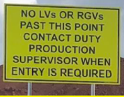
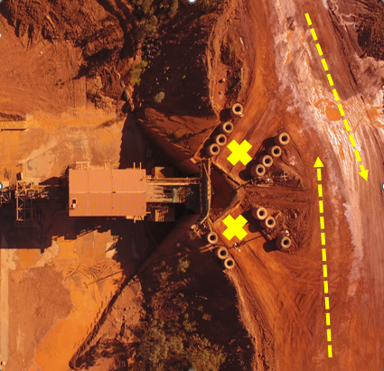
Saddleback
Prefer the ROM bypass road if not tipping. If travelling through the ROM area: broadcast your entry, pos-coms before entering the 40 m zone of any truck reversed in to tip, and notify traffic when clear.
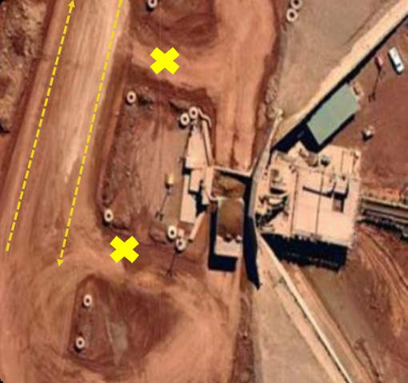
Marradong
No bypass road. Trucks reversed into the hopper or parked inside the bunded area are behind a physical barrier — no permission needed to pass behind them.
Towing & Recovery
Risk assessment first, and a JHA signed off by the Duty Supervisor. Consider:
Spotters in the line of fire if slings or towing points break
Fit-for-purpose recovery slings — never registered lifting chains
Uncontrolled vehicle movement during recovery
Single Lane Roads
Five controlled locations: North 1.5 crossing, Lower Hotham crossing (Saddle 1), and link road gates 1–2, 3–4, 5–6 (Marra 1). Stop at the sign, check clear, announce entry, max 20 kph through.
Right of way when two vehicles meet
1. Loaded trucks → 2. Empty trucks → 3. Other SME → 4. Light vehicles
Two vehicles enter at once? Stop where you are and call the Duty Supervisor to arrange a spotter before reversing out.
Stable Surfaces & Safe Gradients
Ground control is a PMH. Critical controls: 1.5 m windrows, supervisor inspections, minimum 2% incline on tip heads, natural rill before reinstating windrows, haul road sign-off, exclusion zones, training.
Tracked SME near a bench edge: position tracks 45°–90° to the face to avoid overbalancing if it slumps. In-situ material is more stable than disturbed material.
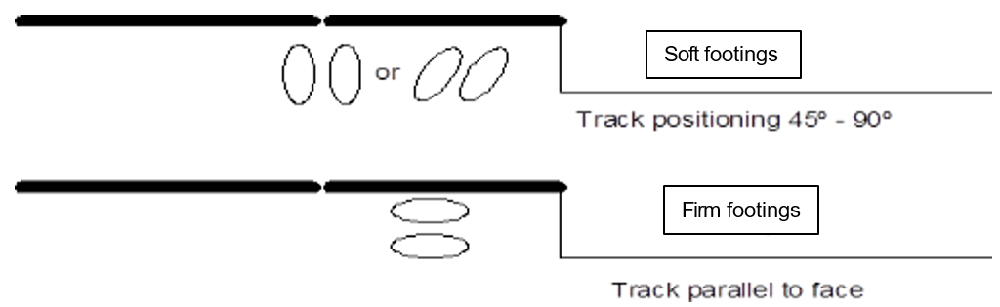
Normal operating gradients
haul road ramps
in-pit ramps under 100 m
in-pit ramps under 30 m
loading operations across slope (loaders and excavators)
Floor inclines over 5%: inform the Duty Superintendent first. Excavator bench access: 2 m wider than track frames, firmly compacted, gradient no greater than 3:1.
Face Protection
Open faces
A catch berm must be built under any face 2 m or higher without a rill, to catch slumping or falling rocks when not in use. Orange cones may barricade an open face temporarily (shift change, crib breaks).
Above in-pit faces
Windrows must block all access to the top of an active bench. If the rill is disturbed or a straight face develops, build a safety windrow back from the edge equal to the face height. Double windrows before reclaiming ROM stockpiles.
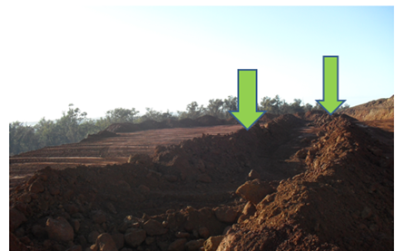
Mining faces
Windrow to protect from slumping and falling rock. Temporary cones placed 10 m from the face, no more than 50 m apart, when unattended. Park SME far enough out that cones don't block service vehicle access.
Roadworks & Graders
Roadworks run in a controlled environment behind coordinator or roadworks signage, with a job coordinator responsible for the work area. Pit Control makes site entrants aware of road hazards. Sign works in active areas happen behind job coordinator signs.
Graders get prioritised tasks from the Duty Supervisor at shift start. Grading a park-up area needs a risk assessment first — restricted space, obstacles, high pedestrian traffic and peak usage times.
Workshop Compound Access
Drop off and pick up SME at the designated area outside the workshop compound where possible.
Working within the Saddleback workshop compound requires the Saddleback Workshop and Compound Access SWI signed, plus a Maintenance Induction.
Whole Body Vibrations
Vibration transmits through seat, floor and controls. Prolonged exposure causes discomfort, fatigue and long-term musculoskeletal disorders.
Faulty seat? Park up immediately. A fitter checks it; if unrepairable, the seat is replaced before the machine returns to service. An acceptable seat has no sideways or forward rocking.
Dozer operators: break every 2 hours of normal operation, after 30 minutes of continuous ripping over hard cap, and stand or stretch when possible.
Correct posture checklist
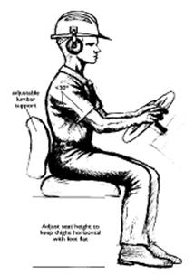
· Sit upright, feet flat, shoulder blades against the backrest
· Seat belt worn and comfortably fitted at all times
· Both hands on the wheel, elbows relaxed, during loading
· Seat height so thighs are horizontal with the feet
· Backrest inclined 10–15° behind vertical, lumbar supported
· Full brake pedal travel while keeping back pressure on the seat
· Reach wheel and controls without stretching away from the seat
· Squelch control (if fitted) adjusted to your weight
Fatigue Management
Causes
Long shifts · night shift and rotating rosters · high physical or mental workload · monotonous tasks like long haul runs · poor sleep quality · excessive vibration exposure
Risks
Slower reactions · reduced concentration and decision-making · microsleeps · more incidents, near misses and equipment damage · long-term health effects
Feeling fatigued? Speak up early
Park up in a safe location ASAP. Notify your supervisor directly, or tell Pit Control and they will pass the message on.
Haul trucks carry a fatigue/distraction system — a critical fatigue event means Pit Control will direct you to park up.
Definitions & Abbreviations
Induction Complete
You have covered all six modules of the Mine Site SME Operating Manual. Revisit any module from the menu — your reading is recorded against the assessment.